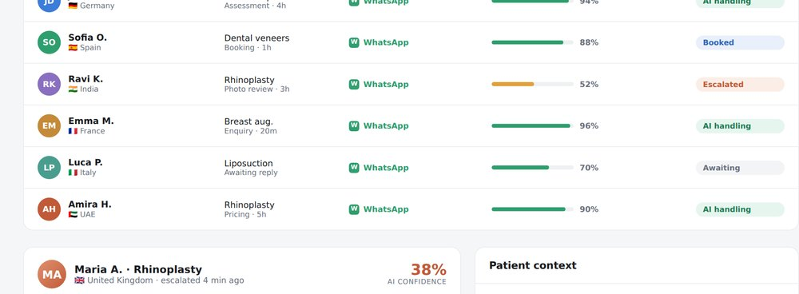
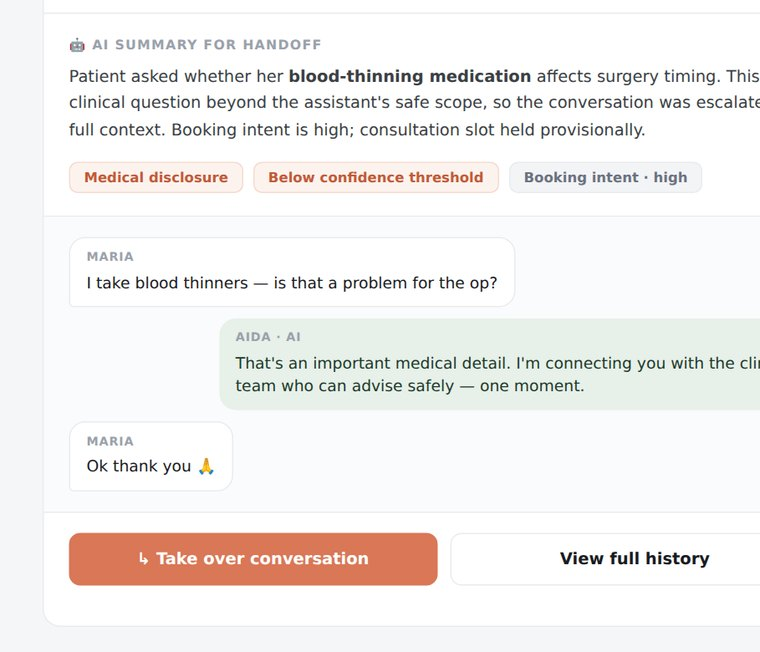
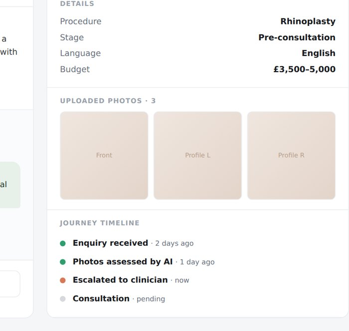
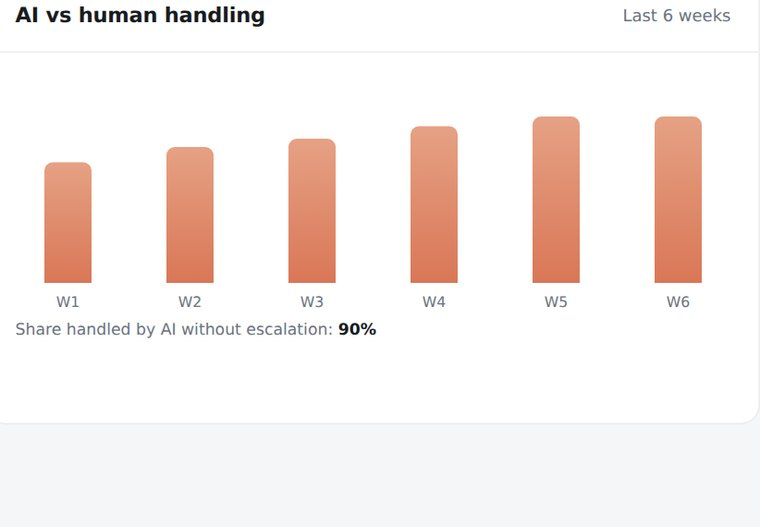

Context
A two-sided platform for a high-stakes journey.
Medical tourism is booming, and cosmetic clinics were drowning in international enquiries they couldn't handle without hiring. AIDA was built to streamline patient triage, consultation and booking through an AI-powered WhatsApp experience — no app, no account, just a conversation.
It's a two-sided product: patients get guided, conversational support across their whole journey, while clinics manage those conversations, appointments and escalations through a dedicated dashboard. My job was to design both sides so they add up to one trustworthy system.
The Problem
Complex journeys, fragmented across too many channels.
Clinics were struggling to manage a growing volume of international enquiries without adding headcount.
Patients needed trusted guidance — not just clinic listings — when making high-stakes decisions abroad.
Journeys were fragmented across channels, creating friction, uncertainty and language barriers.
AI could improve efficiency, but medical questions demand oversight and a human when confidence is low.
The product had to work within real constraints — WhatsApp-first, varied clinic tech maturity, a regulated space.
Opaque pricing and language gaps made clinic-to-patient communication genuinely hard.
Process
Mapping the ecosystem before designing a single screen.
I started by mapping the whole system — patient journeys, clinic workflows, AI decision points, escalation scenarios — before drawing any UI. Research with clinic partners set the shape of both products.
Patient journeys, clinic workflows, AI decision points and escalation scenarios, end to end.
Enquiry, screening, education, photo assessment, pricing and booking — no extra app or account.
Real-time visibility of AI conversations, escalations and context — with mobile access built in.
A confidence model that hands off to a human — with full context — the moment certainty drops.
The Dashboard · SaaS centrepiece
One screen where clinics trust AI with real patients.
The clinic dashboard is where the whole promise holds together. It has to make an AI system legible and controllable — a clinician should be able to glance at it and know exactly which conversations are safe, which need them, and why. Everything is organised around confidence and handoff, not vanity metrics.




"The design brief wasn't a smarter chatbot — it was an AI a clinic would trust with a frightened patient at 11pm."
The Pivot
When complexity multiplied overnight.
When we pivoted AIDA from a marketplace into two distinct products — a community platform and a clinic-facing AI patient agent — the complexity multiplied overnight. The agent was no longer just guiding discovery; it was triaging patients, handling medical disclosures, managing booking logic and post-op check-ins across borders.
Every conversation branch now carried operational, ethical and clinical risk. We couldn't afford to "learn from production" when real patients and surgeons were involved.
So I designed and built an internal simulation tool. It generates diverse patient personas, medical histories and intent patterns, letting us pressure-test conversation logic before release — mapping escalation triggers and branching failures, and redesigning around decision safety rather than conversational neatness. I built it with Claude Code and deployed it locally via Cursor, so the whole team could run scenarios without any infrastructure. A personal workaround became a shared team asset — it turned AIDA from a scripted chatbot into a resilient AI workflow engine clinics could trust with real patients, not just demos.
The Patient Side
A whole journey, inside a conversation.
On the patient side there's no app and no account — just WhatsApp. The AI guides people from first enquiry through screening, procedure education, photo assessment, pricing and booking, then follows up after. Testing showed people preferred no extra download, and that visual guidance dramatically lifted confidence during photo uploads.
The patient experience in motion — a guided, WhatsApp-native conversation that never asks someone to leave the app they already use.
What I Built
End-to-end product design across both sides.
Patient experience
- WhatsApp-native patient journey
- AI triage & structured intake
- Procedure education flows
- Photo upload & assessment
- Pricing transparency & booking
- Post-consultation follow-up
Clinic experience
- Real-time conversation dashboard
- Escalation management workflows
- Patient overview & context panels
- Appointment & booking management
- WhatsApp-integrated comms tools
- Mobile-first clinic operations
Design foundations
- Confidence-based escalation framework
- Modular design system
- Cross-platform component library
- AI conversation-flow architecture
- Rapid prototyping with Claude Code
Impact & Results
Measurable outcomes across every part of the journey.
Before the Pivot
Where it started.
The original AIDA was a patient-facing marketplace — a place to find, compare and contact cosmetic clinics. The pivot transformed it into a two-sided AI platform, shifting the product from discovery to guided care.

The earlier marketplace product — the foundation the guided-care platform was built on.
Where It's Headed
From AIDA to Nia.
With enough clinical partners to validate the model at scale, the product is being rebranded from AIDA to Nia — a name and identity built for the next phase.
The next chapter re-creates the marketplace from the ground up — connecting patients to vetted clinics with the same AI-assisted confidence — alongside a dedicated AI support layer that stays with patients through treatment, recovery and aftercare.
Marketplace, rebuilt
Vetted-clinic discovery re-created on top of a validated, trusted model.
Clinical partnership tooling
The dashboard grows into a fuller operations layer for partner clinics.
Always-on patient AI
A guided companion through treatment, recovery and aftercare.
Nia carries AIDA's trust-and-safety principles forward into one connected ecosystem: discovery, partnership tooling and ongoing patient support.